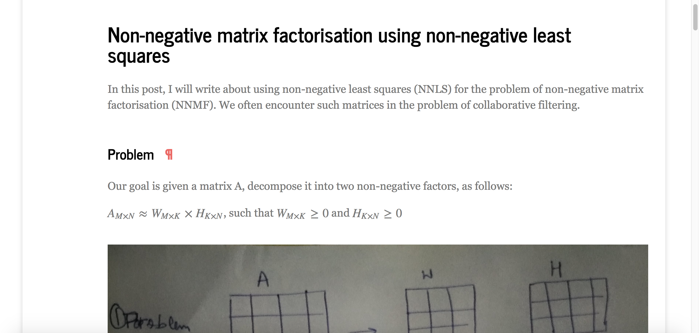
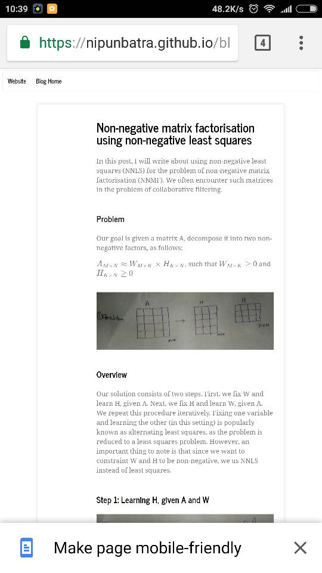
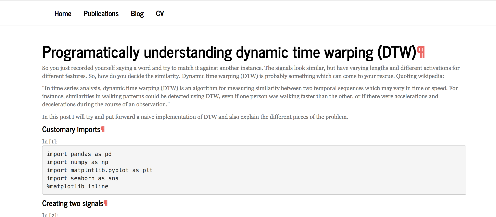
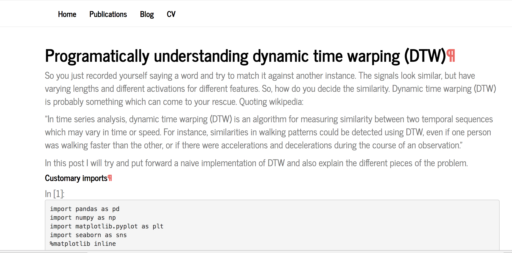
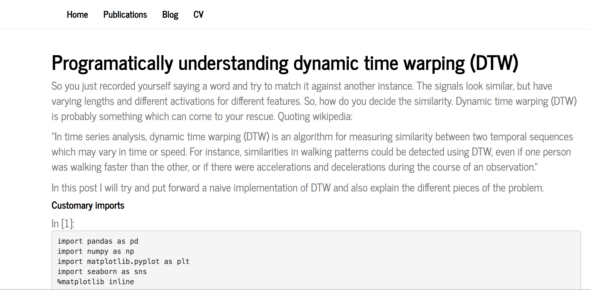
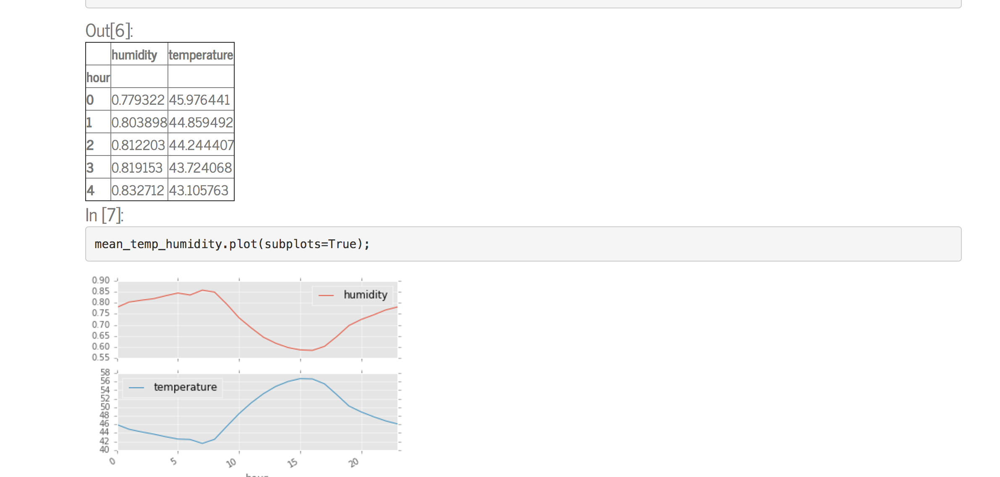
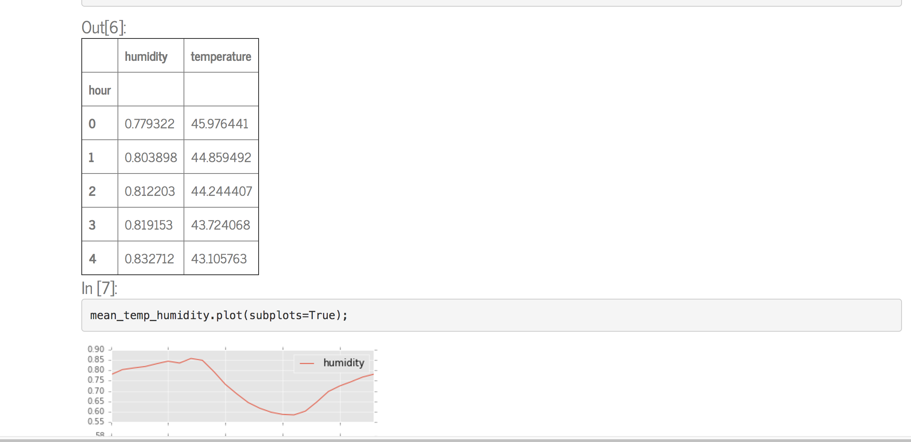
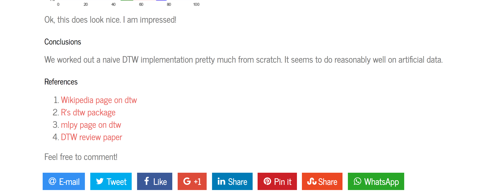

I have been blogging for close to ten years now. I started off with Wordpress back in 2009 and continued using it for 5 years. IPython notebook had become very popular by then and I moved towards Pelican and hosted my blog cum website on Github. Jake Vanderplas and others had put a lot of effort in customising Pelican and adding IPython notebook support. While everything worked well, over time, Pelican started appealing less to me. The builds got slower as I added more posts. Git history would grow crazy as the blog would be regenerated. I looked into alternative blogging engines like Jekyll, which would probably have similar issues? While Medium.com allows linking Jupyter notebook gists, they appear IFramed. I thought: what if I could use nbconvert utility provided by the awesome folks at Jupyter and create a simplish blog- no hassle, no pagination, plain Python code!
My initial experience with nbconvert and converting my Jupyter notebooks to HTML was great. Using nbformat, I created a script that would programatically create an HTML given a .ipynb.
The code looked something like the following:
import sys
from nbconvert import HTMLExporter
import nbformat
notebook_file = sys.argv[1]
html_exporter = HTMLExporter()
nb = nbformat.reads(open(notebook_file, 'r').read(), as_version=4)
(body, resources) = html_exporter.from_notebook_node(nb)
html_file = notebook_file.replace(".ipynb", ".html")
html_file_writer = open(html_file, 'w')
html_file_writer.write(body)
html_file_writer.close()
After this, the generated HTML would look like the following:

Looks pretty, right! However, there should a way to navigate to blog home, right? Do we need a navbar? Right on! How about google analytics? How about Disqus for comments? How about using Bootsrap for powering the remaining website/blog?
Navbar, Disqus comments, Google analytics should be a part of each blog post, right? So, it is best to have their code injected into each blog post. I wrote a simple Python script which would put the JS and CSS code at the right places for these services.
read_navbar = open("navbar.txt", 'r').read()
read_disqus = open("disqus.txt", 'r').read()
read_css = open("main_css.txt", 'r').read()
read_ga = open("google_analytics.txt","r").read()
if read_navbar not in body:
body = body.replace("<body>", "<body>\n" + read_navbar)
if read_ga not in body:
body = body.replace("</body", read_ga + "\n</body>")
if read_disqus not in body:
body = body.replace("</body", read_disqus + "\n</body>")
if read_css not in body:
body = body.replace("</title>", "</title>\n" + read_css)
This snippet does what it looks like. Reads in a bunch of CSS and JS code and puts them at the right place in the HTML. Here is how each of these read files looked like, which are provided by the services respectively.
<div id="disqus_thread"></div>
<script>
/**
* RECOMMENDED CONFIGURATION VARIABLES: EDIT AND UNCOMMENT THE SECTION BELOW TO INSERT DYNAMIC VALUES FROM YOUR PLATFORM OR CMS.
* LEARN WHY DEFINING THESE VARIABLES IS IMPORTANT: https://disqus.com/admin/universalcode/#configuration-variables*/
/*
var disqus_config = function () {
this.page.url = PAGE_URL; // Replace PAGE_URL with your page's canonical URL variable
this.page.identifier = PAGE_IDENTIFIER; // Replace PAGE_IDENTIFIER with your page's unique identifier variable
};
*/
(function() { // DON'T EDIT BELOW THIS LINE
var d = document, s = d.createElement('script');
s.src = 'https://ANONYMOUS-FOR_NOW/embed.js';
s.setAttribute('data-timestamp', +new Date());
(d.head || d.body).appendChild(s);
})();
</script>
<noscript>Please enable JavaScript to view the <a href="https://disqus.com/?ref_noscript">comments powered by Disqus.</a></noscript>
<script>
(function(i,s,o,g,r,a,m){i['GoogleAnalyticsObject']=r;i[r]=i[r]||function(){
(i[r].q=i[r].q||[]).push(arguments)},i[r].l=1*new Date();a=s.createElement(o),
m=s.getElementsByTagName(o)[0];a.async=1;a.src=g;m.parentNode.insertBefore(a,m)
})(window,document,'script','https://www.google-analytics.com/analytics.js','ga');
ga('create', 'PUT YOUR CODE HERE', 'auto');
ga('send', 'pageview');
</script>
<link rel="stylesheet" href="../../assets/css/main.css" />
<nav id="nav">
<ul class="container">
<li><a href="../../index.html">Home</a></li>
<li><a href="../../publications.html">Publications</a></li>
<li><a href="../../blog.html">Blog</a></li>
<li><a href="../../files/cv.pdf">CV</a></li>
</ul>
</nav>
I then created a simple index page which would enlist all the blog posts. A sample post linking would be:
<li><a href ="blog/2017/nmf-nnls.html">Non-negative matrix factorisation using non-negative least squares</a> (29 March)</li>
So, everytime, I would add a blog post, all I would need to do is to invoke the Python script (to convert the .ipynb to HTML; and add disqus, google analytics, navbar, CSS) and link the post on the index page. All working well thus far!
I opened my blog on my mobile and it did not look pretty. There was just too much whitespace! It would look something like the following:

Google Chrome suggested me to render a mobile-friendly page, which did not look very good to me! :(
I then started my quest to dive deep into the CSS inserted by nbconvert and figure what causes the page to be not mobile friendly. I made a few hand-wavy attempts. This approach didn't seem right. Twitter bootstrap (which nbconvert uses as base) is responsive and mobile friendly. Then, it surely would be the CSS used by Jupyter's nbconvert? I opened an issue on the nbconvert repo as well.
Against this background, this post is my attempts at understanding and building a responsive blog powered by Jupyter notebooks. I also hoped that I could help with the nbconvert issue I had created.
basic template¶nbconvert also allows exporting to an HTML that doesn't have all the fancy CSS provided in the default template. My plan at this point was:
basic templatebasic template exported HTML and Bootstrap do not complyI thought this would take a couple of hours at max. How wrong could I be!
This is how the blog post looked at this point of time.

Oh, and if you are wondering if I picked up a Bootstrap customisation, then you are right. I liked the Journal theme from Bootswatch.
I added the following code to inject the following code. <meta name="viewport" content="width=device-width, initial-scale=1"> is important for mobile-friendliness!
body = """<html>
<head>
<meta charset="utf-8">
<meta http-equiv="X-UA-Compatible" content="IE=edge">
<meta name="viewport" content="width=device-width, initial-scale=1">
<meta name="description" content="">
<meta name="author" content="">
<title>Nipun Batra</title>
</head>
<body>
<div class="container" margin="5%">"""+body+"</div></body></html>"
Now, adding this the blog post was responsive and Google Chrome didn't complain on the mobile. To be very sure, I checked on the mobile friendly test powered by Google.
This was simple. In Python:
read_mathjax = open("mathjax.txt", 'r').read()
body = body.replace("</head>", read_mathjax + "\n</head>")
where mathjax.txt looked like:
<script src="https://cdn.mathjax.org/mathjax/latest/MathJax.js?config=TeX-AMS_HTML"></script>
<!-- MathJax configuration -->
<script type="text/x-mathjax-config">
MathJax.Hub.Config({
tex2jax: {
inlineMath: [ ["$","$"], ["\\(","\\)"] ],
displayMath: [ ["$$",'$$'], ["\\[","\\]"] ],
processEscapes: true,
processEnvironments: true
},
// Center justify equations in code and markdown cells. Elsewhere
// we use CSS to left justify single line equations in code cells.
displayAlign: 'center',
"HTML-CSS": {
styles: {'.MathJax_Display': {"margin": 0}},
linebreaks: { automatic: true }
}
});
</script>
The fonts simply looked too tiny at this point. I also happened to look at the font used in the navbar. It looked pretty! If only it was lighter. I added the following CSS into my custom css file, which I included using Python (as shown before)
body {
font-family: "News Cycle", "Arial Narrow Bold", sans-serif;
font-size: 21px;
line-height: 1.42857143;
color: #777777;
background-color: #ffffff
}
The following screenshot shows how the blog post looked at this stage.

Starting to look pretty, no? But, those ugly anchor links in red!
To be very honest, I had little luck trying to remove the anchor links. Yes, I am a novice at CSS. But, I thought I was not at all that bad at googling. Turns out the best way to fix this was to look for the tag on the HTML generated by nbconvert (in default mode). Felt so grateful to the Jupyter team at this point! Here is the copied CSS.
a.anchor-link:link {
text-decoration: none;
padding: 0 20px;
visibility: hidden
}
h1:hover .anchor-link,
h2:hover .anchor-link,
h3:hover .anchor-link,
h4:hover .anchor-link,
h5:hover .anchor-link,
h6:hover .anchor-link {
visibility: visible
}
The following screenshot shows how things looked after including this bit of CSS.

I next looked at a notebook containing a table (Pandas.dataframe). It looked horrible (shown below)

I added the following CSS to ease out the tables a bit. Also, to add hover on selected row.
th,
td {
padding: 8px;
}
tr:hover {
background-color: #f5f5f5
}
The tables looked a whole lot prettier after this (as shown below)

I added a few other fixes.
div.cell {
padding: 4px
}
pre {
font-size: 15px;
}
div.input_prompt {
color: firebrick;
}
div.output_prompt {
color: firebrick;
}
.navbar {
font-size: 27px;
font-family: "News Cycle", "Arial Narrow Bold", sans-serif;
font-weight: 500;
}
.text_cell.rendered h1,
h2,
h3,
h4 {
font-weight: 100
}
responsiveimg {
max-width: 100%
}
At this stage, the blog started looking like it's current avatar!
I next wrote some code for social media liking/sharing using jssocials. It was again the usual inject the JS and CSS programatically into each web page. Along with that, I had to make another change- I would need to insert a title for each HTML page. Since this title is used by sharing services, it better reflect the content of the page. I chose to pick the blog title, which I always put in <h1>. I wrote a simple Python snippet to find this.
from bs4 import BeautifulSoup
soup = BeautifulSoup(body, 'html.parser')
try:
title = soup.find_all('h1')[0].contents[0]
if title is None: title="Nipun Batra"
except:
title="Nipun Batra"a
Now, I programatically passed the title to the HTML. Now, the footer looked like the following.

Clicking on any of these would share the link of the current page and the text shared alongside would be the title of the page
All seemed going well up to this point, till I encountered the following error while writing the converted HTML for one of my blog posts.
/Users/nipunbatra/git/nipunbatra.github.io/blog/add_static_content.py in convert(notebook_file)
122 html_file = notebook_file.replace(".ipynb", ".html")
123 html_file_writer = open(html_file, 'w')
--> 124 html_file_writer.write(body)
125 html_file_writer.close()
UnicodeEncodeError: 'ascii' codec can't encode character u'\xd7' in position 45194: ordinal not in range(128)
I found that the offending character was a X, used for displaying dataframe- 10 X 5. Googling my way around this issue, I found that the solution lay in using Python 3 open. Maybe, high time I shifted to Python 3.
The fix was as simple as:
from builtins import open
How about a script to build all the IPython/Jupter notebooks?
import os
import glob
from add_static_content import convert
base_folder = "."
def get_immediate_subdirectories(a_dir):
return [name for name in os.listdir(a_dir)
if os.path.isdir(os.path.join(a_dir, name))]
to_ignore = ['.idea','.ipynb_checkpoints']
subdirs = get_immediate_subdirectories(base_folder)
subdirs = [x for x in subdirs if x not in to_ignore]
for s in subdirs[:]:
year_path = os.path.join(base_folder, s)
notebooks = glob.glob(os.path.join(year_path, "*.ipynb"))
for n in notebooks[:]:
try:
out = convert(n)
except:
print n
Gosh! Everything works now! There's a lot more to be done though!
It was a lot of learning and a lot of agony! I really wish to thank the Jupyter devs who have done such an amazing job. I would also like to thank all the people whose CSS tricks I benefited from. Feel free to let me know via email or comments what you think about this.